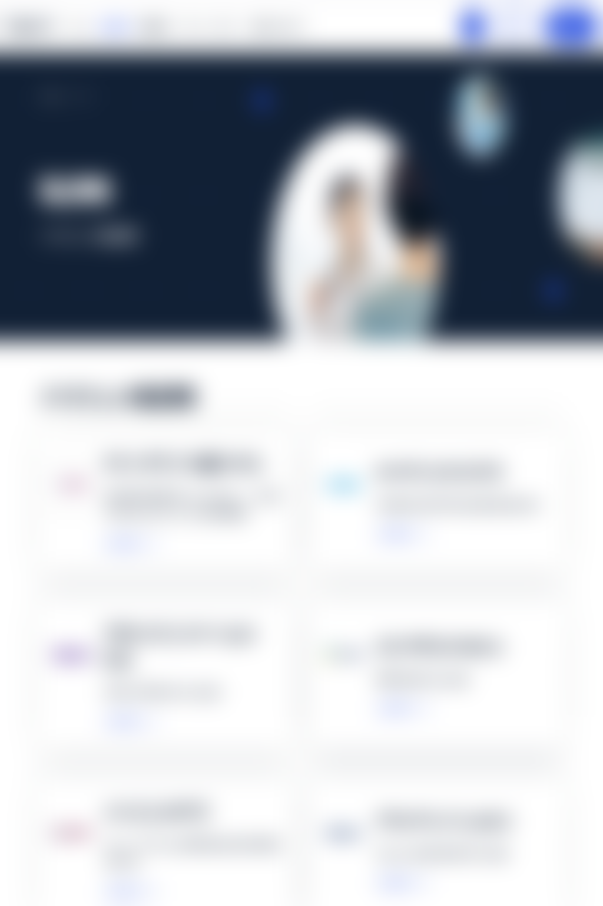
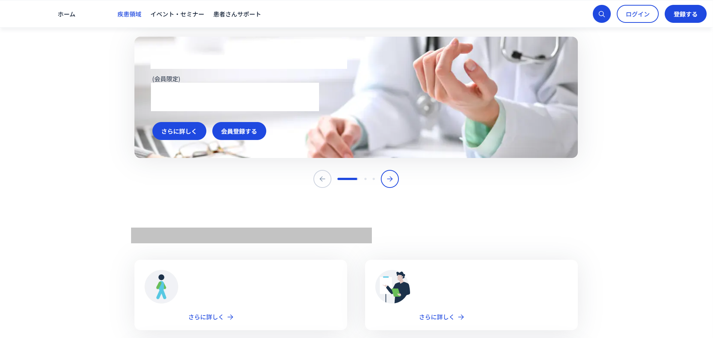
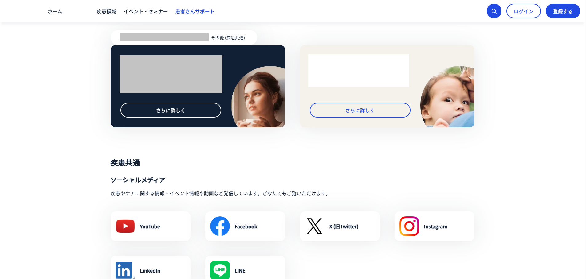

Generative AI & Automation
I interview frontline teams, find where time is lost, and turn the right themes into PoCs — with business-flow guidelines that let developers build without rework.
- Azure OpenAI
- Copilot
- Claude
- PoC
- Python
Project Leader·Web Director·CMS Specialist
I'm Moe Thet Hnin — the bridge between business teams and developers. After 7+ years of web direction and CMS operations for a major pharmaceutical company, and hands-on work in QA and customer support, I now lead generative AI and automation projects from the first interview to rollout.
I interview frontline teams, find where time is lost, and turn the right themes into PoCs — with business-flow guidelines that let developers build without rework.
Planning, task assignment, progress and issue tracking. I keep work visible and stakeholders aligned so projects land on schedule.
7+ years running enterprise pharma sites on AEM and a proprietary CMS — requirements, production, migration and multi-device QA.
Six projects across AI automation, web operations and QA. Here are three highlights.
PoCs and system development that use generative AI and automation to streamline internal work — including overtime pay calculation, monthly performance-data aggregation and automatic journal entries from bank transactions.
Read case study
Migrated 7 existing websites plus a new site for a major pharmaceutical company to a new CMS, including new homepage, landing, webinar and product pages.
Read case study
Content production, updates and operations direction for 21 brand websites of a major pharmaceutical company — corporate, product and patient-support pages. Took over as leader in the second half.
Read case studyProduct, therapeutic-area, event and patient-support pages for a pharmaceutical client.




Client names, product names and sensitive details are hidden or altered under confidentiality agreements. Screenshots illustrate structure, layout and scope of work.